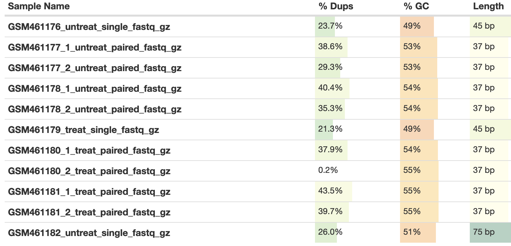
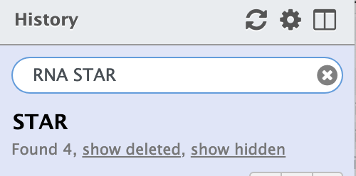
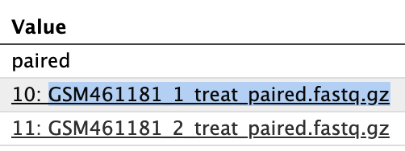
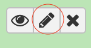
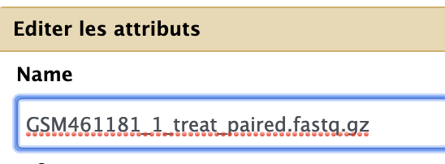
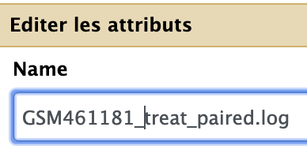
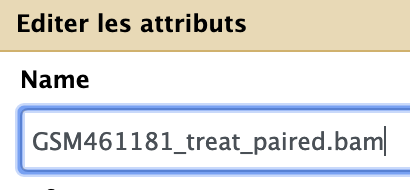

RNA STAR (option for 50 % of attendees)
For information to set proper value for STAR parameters:


- create a new history and name it
RNA STAR - Import the 11 datasets from the RNAseq data library to this
RNA STARhistory, plus the Drosophila_melanogaster.BDGP6.95.gtf file - Select the
RNA STARtool with the following parameters to map your reads on the reference genome:Single-end or paired-end reads: Single-endRNA-Seq FASTQ/FASTA file(multiple datasets button), Cmd-shift Select:GSM461176_untreat_single.fastq.gzGSM461179_treat_single.fastq.gz
Custom or built-in reference genome:Use a built-in indexReference genome with or without an annotation:use genome reference without builtin gene-modelSelect reference genome:Drosophila Melanogaster (dm6)Gene model (gff3,gtf) file for splice junctions:the imported Drosophila_melanogaster.BDGP6.95.gtfLength of the genomic sequence around annotated junctions:44 (This parameter should be length of reads - 1, see above table from fastQC/multiQC analysis)
Execute
Redo the STAR run with
3.2 Select the RNA STAR tool with the following parameters to map your reads on the reference genome:
RNA-Seq FASTQ/FASTA file (as multiple datasets), Cmd-shift Select:
- GSM461182_untreat_single.fastq.gz
3.7 Length of the genomic sequence around annotated junctions: 74 (This parameter should be length of reads - 1, see above table from fastQC/multiQC analysis)
Redo a last STAR run for paired-end datasets
- With the following parameters to map your reads on the reference genome:
Single-end or paired-end reads: Paired-end (as multiple datasets)RNA-Seq FASTQ/FASTA file, forward reads(multiple datasets button), Cmd-shift Select:GSM461177_1_untreat_paired.fastq.gzGSM461178_1_untreat_paired.fastq.gzGSM461180_1_treat_paired.fastq.gz- `GSM461181_1_treat_paired.fastq.gz
RNA-Seq FASTQ/FASTA file, forward reads(multiple datasets button), Cmd-shift Select:GSM461177_2_untreat_paired.fastq.gzGSM461178_2_untreat_paired.fastq.gzGSM461180_2_treat_paired.fastq.gz- `GSM461181_2_treat_paired.fastq.gz
Custom or built-in reference genome:Use a built-in indexReference genome with or without an annotation:use genome reference without builtin gene-modelSelect reference genome:Drosophila Melanogaster (dm6)Gene model (gff3,gtf) file for splice junctions:the imported Drosophila_melanogaster.BDGP6.95.gtfLength of the genomic sequence around annotated junctions:36 (This parameter should be length of reads - 1, see above table from fastQC/multiQC analysis)
Execute
Rename your datasets !

You need now to rename you datasets to facilitate your downstream analysis.
Be quiet and focus ! No hurry, this is an important task in the analysis.
-
Search and select datasets with RNA STAR 
-
Click on the info icon of both
logandbamfiles -
Copy the name or one of the two names of the datasets as shown bellow 
- Now click on the pencil icon of the same dataset 
- Paste your text in the
Namefield of the dataset  - Edit your text as follow for
logfiles  -
Edit your text as follow for
bamfiles  -
repeat ad lib for all
logandbamfiles